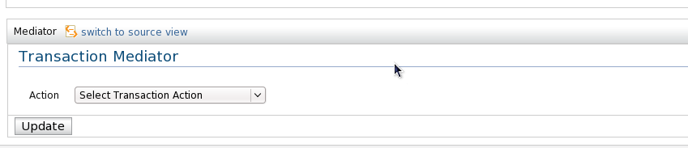

Transaction Mediator
With the transaction mediator, you can do transactions among mediation.

Action
- Commit transaction: End the transaction
- Fault if no transaction: Go to error handler if no transaction
- Initiate new transaction: Entry point for new transaction
- Resume transaction: Resume a puased transaction
- Suspend transaction: Puase a transaction
- Rollback transaction: Rollback a transaction
- Use existing or initiate transaction: If a transaction already exists continue it or create a new transaction